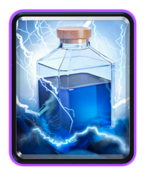
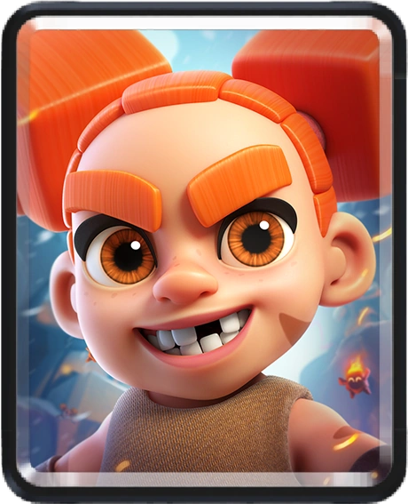
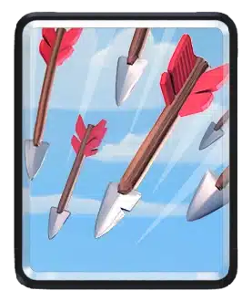
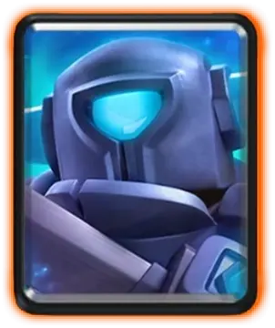

DOMINA EL CAMPO: Descubre el TOP 10 de Cartas Meta.
No juegues a ciegas. Analizamos el meta actual para darte las cartas que garantizan victorias en la Arena.

No juegues a ciegas. Analizamos el meta actual para darte las cartas que garantizan victorias en la Arena.
"Esta lista no es una simple opinión. Nuestro ranking del Top 10 se basa en un análisis exhaustivo de la tasa de victorias en los desafíos, el uso en los mazos de Leyendas y las sinergias clave en el Ladder. La información se actualiza semanalmente para reflejar los últimos cambios de balance."
El Rey del Castigo. Olvídate de los hechizos baratos. El Rayo es tu herramienta de destrucción masiva, diseñada para castigar las defensas estáticas y los pushes lentos. No solo destruye Torres Infernales y recolectores; su verdadero valor radica en eliminar hasta tres unidades clave (Brujas, Magos, Mosqueteras) que el rival pone detrás de la torre, garantizando un contraataque letal. ¡Es el ultimátum del Elixir!
La Leyenda Veloz. El Berserker no solo es una unidad cuerpo a cuerpo rápida y agresiva que inflige daño considerable; su potencial real se desbloquea al morir. Su Furia (Rage) es el potenciador más temido del juego. Ya sea que lo uses para acompañar un globo o un Golem, su timing con el hechizo de Furia que deja caer es la clave para romper el ciclo de defensa del oponente y asegurar esa corona.
El Limpiador de Mesa. Un clásico atemporal que sigue siendo indispensable. En un meta lleno de enjambres (Esbirros, Barril de Goblins, Ejército de Esqueletos), las Flechas ofrecen el mejor retorno de Elixir para limpiar la zona de forma inmediata. No se trata solo de daño; es la garantía de que ese push de 5 Elixir no se detendrá por una Horda barata. Simplicidad, efectividad y confiabilidad.
El Demoledor de Tanques. El Mini P.E.K.K.A. es el especialista en daño de un solo objetivo más rápido y contundente de la Arena. Su trabajo es simple: eliminar todo lo que cueste 5+ Elixir (Gigantes, Golems, Montapuercos) con una eficiencia brutal. Es la respuesta perfecta y económica si tu mazo sufre contra las unidades con alta salud.
